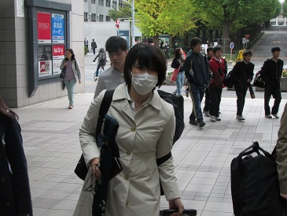
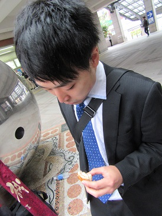
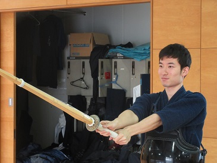
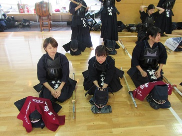

|
10月30日に行われた後期早慶戦の様子をお伝えします。今回も慶應義塾大学矢上キャンパス の体育館をお借りして、試合並びに合同稽古を行いました。 試合と地稽古が一度にできる有意義な一日でしたね。 更新が遅くなり、ファンの皆様にはご迷惑おかけしました。 今回も撮影に協力してくれたみんな、ありがとうございました！ 日吉駅には清田（54）が一番乗り。なんだか渋い顔…おはよう。 広報の天敵、伊藤（５４・右）と大石（５５・左）。おはよう。 髪色に個性、桑原（５５）。 今日はあんまり主張してこないのか、と思ったらこれだよ。 会内でも１、２を争う広報泣かせの水谷（５５） 一女……あっ！左のやつは二年生だっ！一年じゃないっ！ ほのぼのコンビも到着（勝間田・鈴木） 水谷のマブダチこと、やっくん（５５）おはよう！ 本日の第三副将の朝ごはんはおにぎりでした。（誰得） 眠そう（適当） 「えー、これー？、うんー、そうそうー、かわいいでしょー、これｎ（ｒｙ 試合でないけど応援しに（遊びに？）来てくれた安藤（５４）。 なんかたくさんきた…  ん……？ うわあああああああああああああああああああああああ 微妙な距離感を保つ大橋（５３・右）と李（５３・左）。メンへラかよ。 突然そういうことされても困るんだよな。 前田（５４・左）と阿部（５４・右）のオラオラショット。おにぎりがかわいそう…  そして広報泣かせの中心人物、須合（５３） （このあと「写真撮りに試合来てんじゃねえぞ」と怒られました。） 加藤（５５）。これ撮った記憶は残っているかな…（意味深） 女子代表と第三副将が踊り始めたので、今日も平和です。 それでは出発！矢上は遠いんだよね…（死の行進） 広報は道の途中で５３期のヘタレこと坂本と合流しました。 どうやら一人も脱落者を出さずに矢上の体育館に到着できました… 素振りに励む森（５５）と… その横で視線を送ってくるあいつ…  撮られていることに気づいてしまった青木（５４）の顔。  二女’ｓ。気のせいかな、視線が冷たい… 一女の中村を前にデレデレしてる安藤（５４）を写真に収めときました。 
無題。 
アップも終了！いよいよ試合です！ 小休止。 試合からは後期早慶戦（その2）に続きます！ (※写真へのコメントは全て管理人がしております。) |